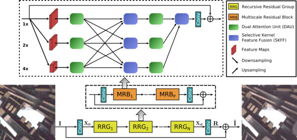
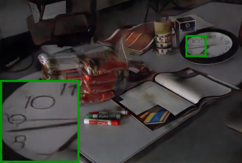

Aditya Arora
|
I am a Research Engineer at Inception Institute of Artificial Intelligence working with Dr. Fahad Shahbaz Khan and Dr. Syed Waqas Zamir. At IIAI, I work at the intersection of Computer Vision and Deep Learning both from a research perspective and also using my research into real-world projects. Before my current position, I completed my undergraduate studies in Computer Science Engineering from DIT University. I have also been a Research Intern at Indian Institute of Technology, Roorkee where I worked with Dr. Balasubramanian Raman on Acoustic Scene Classification. My research interests include low-level vision tasks such as Image Denoising, Image Enhancement and Super Resolution.
aditya.arora at inceptioniai.org |

|
| [Apr’21] | MPRNet inspired winning solutions in CVPR-NTIRE 2021 for Dual-pixel Defocus Deblurring and Image Deblurring Challenges. |
| [Apr’21] | We achieved 2nd position in CVPR-NTIRE 2021 Dual-Pixel Defocus Deblurring Challenge. |
| [Mar’21] | Our paper MPRNet is accepted at CVPR’21. |
| [Jul’20] | Our paper MIRNet is accepted at ECCV’20. |
| [Mar’20] | Our papers CycleISP (Oral) and AnimalWeb are accepted at CVPR’20. |
| [Aug’19] | A Large-scale Instance Segmentation Dataset for Aerial Images (iSAID) is available for download. |
| [Apr’19] | We achieved 2nd position in CVPR-NTIRE 2019 Image Enhancement Challenge. |
Syed Waqas Zamir*, Aditya Arora*, Salman Khan, Munawar Hayat, Fahad Shahbaz Khan, Ming-Hsuan Yang, Ling Shao Computer Vision and Pattern Recognition (CVPR), 2021 |
|  | Syed Waqas Zamir, Aditya Arora, Salman Khan, Munawar Hayat, Fahad Shahbaz Khan, Ming-Hsuan Yang, Ling Shao European Conference on Computer Vision (ECCV), 2020 |
Syed Waqas Zamir, Aditya Arora, Salman Khan, Munawar Hayat, Fahad Shahbaz Khan, Ming-Hsuan Yang, Ling Shao Computer Vision and Pattern Recognition (CVPR), 2020 |
|
Muhammad Haris Khan, John McDonagh, Salman Khan, Muhammad Shahabuddin, Aditya Arora, Fahad Shahbaz Khan, Ling Shao, Georgios Tzimiropoulos Computer Vision and Pattern Recognition (CVPR), 2020
arxiv /
bibtex /
project
@inproceedings{khan2020animalweb,
title={Animalweb: A large-scale hierarchical dataset of annotated animal faces},
author={Muhammad Haris Khan and John McDonagh and Salman Khan
and Muhammad Shahabuddin and Aditya Arora and Fahad Shahbaz Khan
and Ling Shao and Georgios Tzimiropoulos},
booktitle={CVPR},
year={2020}
}
|
Syed Waqas Zamir*, Aditya Arora*, Akshita Gupta, Salman Khan, Guolei Sun, Fahad Shahbaz Khan, Fan Zhu, Ling Shao, Gui-Song Xia, Xiang Bai Computer Vision and Pattern Recognition Workshops (CVPRW), 2019
arxiv /
bibtex /
code /
project
@inproceedings{waqas2019isaid,
title={isaid: A large-scale dataset for instance segmentation in aerial images},
author={Syed Waqas Zamir and Aditya Arora and Akshita Gupta and Salman Khan
and Guolei Sun and Fahad Shahbaz Khan and Fan Zhu and Ling Shao
and Gui-Song Xia and Xiang Bai},
booktitle={CVPR Workshops},
year={2019}
}
|
|
|  | Syed Waqas Zamir, Aditya Arora, Salman Khan, Fahad Shahbaz Khan, Ling Shao Neurocomputing, 2021 |
Gaurav Bhatt, Akshita Gupta, Aditya Arora, Balasubramanian Raman Interspeech Workshops, 2018 |
Built on GitHub pages